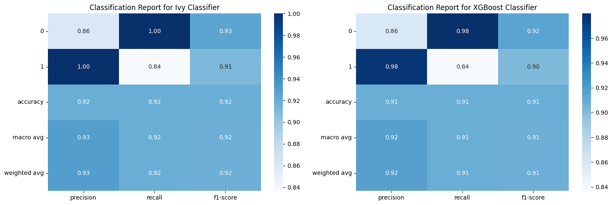

Credit Card Fraud Detection using Ivy Framework#
This notebook is dedicated to the task of identifying fraudulent transactions in credit card data. Utilizing the powerful Ivy framework, we will employ the XGBoost classifier to build a predictive model. The goal is to accurately distinguish between legitimate and fraudulent activities, thereby enhancing the security of credit card usage.
Library Installation#
Before diving into the fraud detection analysis, we need to set up our environment with the necessary libraries. The following commands install Ivy, which is an end-to-end machine learning framework, and other essential libraries such as XGBoost, pandas, matplotlib, scikit-learn, torch, and cryptography. These tools provide a robust foundation for data manipulation, visualization, model training, and secure processing.
[4]:
!pip install -q -r requirements.txt
━━━━━━━━━━━━━━━━━━━━━━━━━━━━━━━━━━━━━━━━ 16.4/16.4 MB 25.1 MB/s eta 0:00:00
━━━━━━━━━━━━━━━━━━━━━━━━━━━━━━━━━━━━━━━━ 44.6/44.6 kB 3.1 MB/s eta 0:00:00
━━━━━━━━━━━━━━━━━━━━━━━━━━━━━━━━━━━━━━━━ 45.5/45.5 kB 4.4 MB/s eta 0:00:00
━━━━━━━━━━━━━━━━━━━━━━━━━━━━━━━━━━━━━━━━ 143.8/143.8 kB 7.9 MB/s eta 0:00:00
━━━━━━━━━━━━━━━━━━━━━━━━━━━━━━━━━━━━━━━━ 756.0/756.0 kB 21.9 MB/s eta 0:00:00
━━━━━━━━━━━━━━━━━━━━━━━━━━━━━━━━━━━━━━━━ 116.3/116.3 kB 6.0 MB/s eta 0:00:00
━━━━━━━━━━━━━━━━━━━━━━━━━━━━━━━━━━━━━━━━ 23.7/23.7 MB 29.1 MB/s eta 0:00:00
━━━━━━━━━━━━━━━━━━━━━━━━━━━━━━━━━━━━━━━━ 823.6/823.6 kB 46.8 MB/s eta 0:00:00
━━━━━━━━━━━━━━━━━━━━━━━━━━━━━━━━━━━━━━━━ 14.1/14.1 MB 44.5 MB/s eta 0:00:00
━━━━━━━━━━━━━━━━━━━━━━━━━━━━━━━━━━━━━━━━ 731.7/731.7 MB 945.8 kB/s eta 0:00:00
━━━━━━━━━━━━━━━━━━━━━━━━━━━━━━━━━━━━━━━━ 410.6/410.6 MB 2.8 MB/s eta 0:00:00
━━━━━━━━━━━━━━━━━━━━━━━━━━━━━━━━━━━━━━━━ 121.6/121.6 MB 8.3 MB/s eta 0:00:00
━━━━━━━━━━━━━━━━━━━━━━━━━━━━━━━━━━━━━━━━ 56.5/56.5 MB 14.4 MB/s eta 0:00:00
━━━━━━━━━━━━━━━━━━━━━━━━━━━━━━━━━━━━━━━━ 124.2/124.2 MB 8.7 MB/s eta 0:00:00
━━━━━━━━━━━━━━━━━━━━━━━━━━━━━━━━━━━━━━━━ 196.0/196.0 MB 4.8 MB/s eta 0:00:00
━━━━━━━━━━━━━━━━━━━━━━━━━━━━━━━━━━━━━━━━ 166.0/166.0 MB 7.7 MB/s eta 0:00:00
━━━━━━━━━━━━━━━━━━━━━━━━━━━━━━━━━━━━━━━━ 99.1/99.1 kB 11.5 MB/s eta 0:00:00
━━━━━━━━━━━━━━━━━━━━━━━━━━━━━━━━━━━━━━━━ 21.1/21.1 MB 71.7 MB/s eta 0:00:00
━━━━━━━━━━━━━━━━━━━━━━━━━━━━━━━━━━━━━━━━ 1.6/1.6 MB 71.5 MB/s eta 0:00:00
Importing Libraries and Configuring the Environment#
To ensure our notebook is prepared for credit card fraud detection, we begin by importing essential libraries:
numpyandpandasfor data handling and manipulation.ivyand its backendjaxfor utilizing Ivy’s machine learning capabilities with JAX’s performance optimizations.ivy.functional.frontends.xgboostasxgb_frontendto access XGBoost functionalities in an Ivy-compatible manner.sklearn.metrics,sklearn.model_selection, andtimeitfor evaluating model performance and timing operations.xgboostasxgbfor implementing the XGBoost classifier.functoolsfor higher-order functions and operations on callable objects.tqdm_notebookastqdmfor progress bars in Jupyter Notebooks.
These imports lay the groundwork for our data preprocessing, model training, and evaluation steps that follow.
[ ]:
import numpy as np
import pandas as pd
import ivy; ivy.set_backend("jax")
import jax; jax.config.update("jax_enable_x64", True)
import ivy.functional.frontends.xgboost as xgb_frontend
from sklearn.metrics import classification_report
from sklearn.model_selection import train_test_split
from timeit import timeit
import xgboost as xgb
import pandas as pd
import functools
from tqdm import tqdm_notebook as tqdm
/usr/local/lib/python3.10/dist-packages/ivy/utils/exceptions.py:383: UserWarning: The current backend: 'jax' does not support inplace updates natively. Ivy would quietly create new arrays when using inplace updates with this backend, leading to memory overhead (same applies for views). If you want to control your memory management, consider doing ivy.set_inplace_mode('strict') which should raise an error whenever an inplace update is attempted with this backend.
warnings.warn(
Loading the Dataset#
The first step in our fraud detection analysis is to load the dataset into a Pandas DataFrame. This allows us to leverage Pandas’ powerful data manipulation tools to explore and preprocess the data. The dataset is expected to contain transactions with various features, among which we will identify patterns that signal fraudulent activity.
[ ]:
# loading the dataset to a Pandas DataFrame
credit_card_data = pd.read_csv('creditcard.csv')
Previewing the Dataset#
To get a sense of the data we’re working with, it’s helpful to preview the first few entries. This can give us insight into the structure of the dataset, the type of features present, and the initial data quality. Below, we use the .head() method to display the first five rows of our credit card transactions dataset.
[ ]:
# first 5 rows of the dataset
credit_card_data.head()
| Time | V1 | V2 | V3 | V4 | V5 | V6 | V7 | V8 | V9 | ... | V21 | V22 | V23 | V24 | V25 | V26 | V27 | V28 | Amount | Class | |
|---|---|---|---|---|---|---|---|---|---|---|---|---|---|---|---|---|---|---|---|---|---|
| 0 | 0.0 | -1.359807 | -0.072781 | 2.536347 | 1.378155 | -0.338321 | 0.462388 | 0.239599 | 0.098698 | 0.363787 | ... | -0.018307 | 0.277838 | -0.110474 | 0.066928 | 0.128539 | -0.189115 | 0.133558 | -0.021053 | 149.62 | 0 |
| 1 | 0.0 | 1.191857 | 0.266151 | 0.166480 | 0.448154 | 0.060018 | -0.082361 | -0.078803 | 0.085102 | -0.255425 | ... | -0.225775 | -0.638672 | 0.101288 | -0.339846 | 0.167170 | 0.125895 | -0.008983 | 0.014724 | 2.69 | 0 |
| 2 | 1.0 | -1.358354 | -1.340163 | 1.773209 | 0.379780 | -0.503198 | 1.800499 | 0.791461 | 0.247676 | -1.514654 | ... | 0.247998 | 0.771679 | 0.909412 | -0.689281 | -0.327642 | -0.139097 | -0.055353 | -0.059752 | 378.66 | 0 |
| 3 | 1.0 | -0.966272 | -0.185226 | 1.792993 | -0.863291 | -0.010309 | 1.247203 | 0.237609 | 0.377436 | -1.387024 | ... | -0.108300 | 0.005274 | -0.190321 | -1.175575 | 0.647376 | -0.221929 | 0.062723 | 0.061458 | 123.50 | 0 |
| 4 | 2.0 | -1.158233 | 0.877737 | 1.548718 | 0.403034 | -0.407193 | 0.095921 | 0.592941 | -0.270533 | 0.817739 | ... | -0.009431 | 0.798278 | -0.137458 | 0.141267 | -0.206010 | 0.502292 | 0.219422 | 0.215153 | 69.99 | 0 |
5 rows × 31 columns
Inspecting the End of the Dataset#
It’s just as important to inspect the end of the dataset as it is the beginning. This helps us verify data consistency and completeness. By using the .tail() method, we can view the last five rows of our credit card transactions dataset, ensuring that our data is well-structured and ready for analysis.
[ ]:
credit_card_data.tail()
| Time | V1 | V2 | V3 | V4 | V5 | V6 | V7 | V8 | V9 | ... | V21 | V22 | V23 | V24 | V25 | V26 | V27 | V28 | Amount | Class | |
|---|---|---|---|---|---|---|---|---|---|---|---|---|---|---|---|---|---|---|---|---|---|
| 284802 | 172786.0 | -11.881118 | 10.071785 | -9.834783 | -2.066656 | -5.364473 | -2.606837 | -4.918215 | 7.305334 | 1.914428 | ... | 0.213454 | 0.111864 | 1.014480 | -0.509348 | 1.436807 | 0.250034 | 0.943651 | 0.823731 | 0.77 | 0 |
| 284803 | 172787.0 | -0.732789 | -0.055080 | 2.035030 | -0.738589 | 0.868229 | 1.058415 | 0.024330 | 0.294869 | 0.584800 | ... | 0.214205 | 0.924384 | 0.012463 | -1.016226 | -0.606624 | -0.395255 | 0.068472 | -0.053527 | 24.79 | 0 |
| 284804 | 172788.0 | 1.919565 | -0.301254 | -3.249640 | -0.557828 | 2.630515 | 3.031260 | -0.296827 | 0.708417 | 0.432454 | ... | 0.232045 | 0.578229 | -0.037501 | 0.640134 | 0.265745 | -0.087371 | 0.004455 | -0.026561 | 67.88 | 0 |
| 284805 | 172788.0 | -0.240440 | 0.530483 | 0.702510 | 0.689799 | -0.377961 | 0.623708 | -0.686180 | 0.679145 | 0.392087 | ... | 0.265245 | 0.800049 | -0.163298 | 0.123205 | -0.569159 | 0.546668 | 0.108821 | 0.104533 | 10.00 | 0 |
| 284806 | 172792.0 | -0.533413 | -0.189733 | 0.703337 | -0.506271 | -0.012546 | -0.649617 | 1.577006 | -0.414650 | 0.486180 | ... | 0.261057 | 0.643078 | 0.376777 | 0.008797 | -0.473649 | -0.818267 | -0.002415 | 0.013649 | 217.00 | 0 |
5 rows × 31 columns
Dataset Information#
Understanding the structure and composition of our dataset is crucial before we proceed with any analysis. The .info() method provides a concise summary of the DataFrame, including the number of entries, the presence of null values, the data types of each column, and the memory usage. This information is invaluable as it helps us plan our preprocessing steps and ensures that our data is in the right format for the XGBoost classifier.
[ ]:
# dataset informations
credit_card_data.info()
<class 'pandas.core.frame.DataFrame'>
RangeIndex: 284807 entries, 0 to 284806
Data columns (total 31 columns):
# Column Non-Null Count Dtype
--- ------ -------------- -----
0 Time 284807 non-null float64
1 V1 284807 non-null float64
2 V2 284807 non-null float64
3 V3 284807 non-null float64
4 V4 284807 non-null float64
5 V5 284807 non-null float64
6 V6 284807 non-null float64
7 V7 284807 non-null float64
8 V8 284807 non-null float64
9 V9 284807 non-null float64
10 V10 284807 non-null float64
11 V11 284807 non-null float64
12 V12 284807 non-null float64
13 V13 284807 non-null float64
14 V14 284807 non-null float64
15 V15 284807 non-null float64
16 V16 284807 non-null float64
17 V17 284807 non-null float64
18 V18 284807 non-null float64
19 V19 284807 non-null float64
20 V20 284807 non-null float64
21 V21 284807 non-null float64
22 V22 284807 non-null float64
23 V23 284807 non-null float64
24 V24 284807 non-null float64
25 V25 284807 non-null float64
26 V26 284807 non-null float64
27 V27 284807 non-null float64
28 V28 284807 non-null float64
29 Amount 284807 non-null float64
30 Class 284807 non-null int64
dtypes: float64(30), int64(1)
memory usage: 67.4 MB
Identifying Missing Values#
Before proceeding with any data preprocessing or analysis, it’s essential to identify any missing values within our dataset. Missing data can significantly impact the performance of our machine learning model. By using the .isnull().sum() method, we can quickly get a count of missing values in each column of our credit card transactions dataset. This step ensures that we handle such values appropriately, either by imputation or removal, to maintain the integrity of our analysis.
[ ]:
# checking the number of missing values in each column
credit_card_data.isnull().sum()
Time 0
V1 0
V2 0
V3 0
V4 0
V5 0
V6 0
V7 0
V8 0
V9 0
V10 0
V11 0
V12 0
V13 0
V14 0
V15 0
V16 0
V17 0
V18 0
V19 0
V20 0
V21 0
V22 0
V23 0
V24 0
V25 0
V26 0
V27 0
V28 0
Amount 0
Class 0
dtype: int64
Transaction Class Distribution#
A critical step in fraud detection is understanding the distribution of legitimate and fraudulent transactions. This helps us grasp the imbalance in the dataset, which is common in fraud detection scenarios. By calling .value_counts() on the ‘Class’ column, we can see the number of instances for each class. Typically, ‘1’ represents fraudulent transactions, and ‘0’ represents legitimate ones. This distribution will inform how we approach model training and evaluation.
[ ]:
# distribution of legit transactions & fraudulent transactions
credit_card_data['Class'].value_counts()
0 284315
1 492
Name: Class, dtype: int64
This Dataset is highly imbalanced
0 –> Normal Transaction
1 –> fraudulent transaction
Importing Ivy#
Ivy is a unified machine learning framework that allows for writing code that is agnostic to the underlying deep learning framework. By importing Ivy, we can develop models that are compatible with various backends such as TensorFlow, PyTorch, or JAX. This flexibility is particularly useful for research and development in machine learning, where the ability to switch between different frameworks without changing the codebase can be a significant advantage.
[ ]:
import ivy
Separating Data for Analysis#
To effectively analyze and detect credit card fraud, we need to separate the legitimate transactions from the fraudulent ones. This is done by creating two distinct DataFrames: one for legitimate (Class == 0) and another for fraudulent transactions (Class == 1). This separation is crucial for understanding the characteristics of each class and for training our machine learning model with a clear distinction between the two types of transactions.
[ ]:
# separating the data for analysis
legit = credit_card_data[credit_card_data.Class == 0]
fraud = credit_card_data[credit_card_data.Class == 1]
[ ]:
print(legit.shape)
print(fraud.shape)
(284315, 31)
(492, 31)
Statistical Measures of Legitimate Transactions#
To gain insights into the typical transaction amounts and understand their distribution, we can use descriptive statistics. By applying the .describe() method to the ‘Amount’ column of the legitimate transactions DataFrame, we obtain a summary that includes count, mean, standard deviation, minimum and maximum values, and the quartiles of the dataset. This statistical overview is instrumental in identifying any unusual patterns that might indicate fraudulent activity.
[ ]:
# statistical measures of the data
legit.Amount.describe()
count 284315.000000
mean 88.291022
std 250.105092
min 0.000000
25% 5.650000
50% 22.000000
75% 77.050000
max 25691.160000
Name: Amount, dtype: float64
Statistical Measures of Fraudulent Transactions#
Analyzing the transaction amounts of fraudulent activities can reveal important patterns and outliers. By using the .describe() method on the ‘Amount’ column of the fraudulent transactions DataFrame, we receive a statistical summary. This includes the total count, mean, standard deviation, minimum and maximum values, as well as the quartiles. These statistics are crucial for detecting anomalies and understanding the financial behavior associated with fraud.
[ ]:
fraud.Amount.describe()
count 492.000000
mean 122.211321
std 256.683288
min 0.000000
25% 1.000000
50% 9.250000
75% 105.890000
max 2125.870000
Name: Amount, dtype: float64
Comparing Transaction Metrics#
To deepen our understanding of the differences between legitimate and fraudulent transactions, we can compare their average values across all features. By grouping the data by the ‘Class’ column and calculating the mean, we obtain a clear picture of the distinct characteristics that separate the two classes. This comparison is vital for feature selection and for guiding the machine learning model to recognize patterns indicative of fraud.
[ ]:
# compare the values for both transactions
credit_card_data.groupby('Class').mean()
| Time | V1 | V2 | V3 | V4 | V5 | V6 | V7 | V8 | V9 | ... | V20 | V21 | V22 | V23 | V24 | V25 | V26 | V27 | V28 | Amount | |
|---|---|---|---|---|---|---|---|---|---|---|---|---|---|---|---|---|---|---|---|---|---|
| Class | |||||||||||||||||||||
| 0 | 94838.202258 | 0.008258 | -0.006271 | 0.012171 | -0.007860 | 0.005453 | 0.002419 | 0.009637 | -0.000987 | 0.004467 | ... | -0.000644 | -0.001235 | -0.000024 | 0.000070 | 0.000182 | -0.000072 | -0.000089 | -0.000295 | -0.000131 | 88.291022 |
| 1 | 80746.806911 | -4.771948 | 3.623778 | -7.033281 | 4.542029 | -3.151225 | -1.397737 | -5.568731 | 0.570636 | -2.581123 | ... | 0.372319 | 0.713588 | 0.014049 | -0.040308 | -0.105130 | 0.041449 | 0.051648 | 0.170575 | 0.075667 | 122.211321 |
2 rows × 30 columns
Under-Sampling for Balanced Dataset#
In our dataset, the number of legitimate transactions significantly outnumbers the fraudulent ones. To address this imbalance and create a fair comparison during model training, we perform under-sampling. We create a sample dataset that contains a similar distribution of normal and fraudulent transactions.
Here, we take a random sample of 492 legitimate transactions to match the number of fraudulent transactions. This balanced dataset will help in preventing our model from being biased towards predicting transactions as legitimate.
Build a sample dataset containing similar distribution of normal transactions and Fraudulent Transactions
Number of Fraudulent Transactions –> 492
[ ]:
legit_sample = legit.sample(n=492)
Creating a Balanced Dataset#
After under-sampling the legitimate transactions, we combine them with the fraudulent transactions to create a new balanced dataset. This is achieved by concatenating the two DataFrames along the rows (axis=0). The resulting dataset, new_dataset, now has an equal number of legitimate and fraudulent transactions, which is essential for unbiased model training and accurate performance evaluation.
[ ]:
#Concatenating two DataFrames
new_dataset = pd.concat([legit_sample, fraud], axis=0)
[ ]:
new_dataset.head()
| Time | V1 | V2 | V3 | V4 | V5 | V6 | V7 | V8 | V9 | ... | V21 | V22 | V23 | V24 | V25 | V26 | V27 | V28 | Amount | Class | |
|---|---|---|---|---|---|---|---|---|---|---|---|---|---|---|---|---|---|---|---|---|---|
| 65908 | 51801.0 | -0.519205 | 0.852437 | 1.191664 | 2.749435 | 0.639186 | 0.666758 | 0.310037 | 0.116659 | -1.554879 | ... | 0.207139 | 0.748058 | 0.229554 | -0.272256 | -0.304838 | 0.251128 | -0.131252 | 0.036799 | 14.45 | 0 |
| 195557 | 131120.0 | -2.102139 | -0.442451 | -0.887016 | 4.579461 | 0.325601 | 1.615304 | 2.621226 | 0.291374 | -3.236204 | ... | 0.557458 | 0.159454 | 0.710631 | -1.429388 | 1.234335 | 0.787399 | -0.300106 | -0.108052 | 614.45 | 0 |
| 53744 | 46126.0 | -0.823696 | -0.028978 | 0.698815 | -2.498501 | -0.813862 | -0.788743 | -0.279106 | 0.488737 | -2.885320 | ... | -0.300256 | -0.715811 | 0.186151 | 0.132502 | -0.385279 | -0.634010 | 0.231485 | 0.096003 | 24.98 | 0 |
| 224892 | 144011.0 | 1.802980 | -1.264517 | -1.123151 | -0.302386 | -0.758015 | -0.307608 | -0.405042 | -0.111496 | -0.265297 | ... | -0.260045 | -0.499437 | 0.056524 | -0.534144 | -0.206880 | -0.386490 | -0.001905 | -0.026937 | 172.03 | 0 |
| 55713 | 47085.0 | -0.738160 | -3.575518 | -0.551978 | 0.894729 | -1.839781 | 0.083335 | 0.779428 | -0.083990 | 0.568542 | ... | 0.554234 | -0.707282 | -0.924631 | 0.076400 | -0.157681 | 0.914957 | -0.266566 | 0.168184 | 1025.00 | 0 |
5 rows × 31 columns
[ ]:
new_dataset.tail()
| Time | V1 | V2 | V3 | V4 | V5 | V6 | V7 | V8 | V9 | ... | V21 | V22 | V23 | V24 | V25 | V26 | V27 | V28 | Amount | Class | |
|---|---|---|---|---|---|---|---|---|---|---|---|---|---|---|---|---|---|---|---|---|---|
| 279863 | 169142.0 | -1.927883 | 1.125653 | -4.518331 | 1.749293 | -1.566487 | -2.010494 | -0.882850 | 0.697211 | -2.064945 | ... | 0.778584 | -0.319189 | 0.639419 | -0.294885 | 0.537503 | 0.788395 | 0.292680 | 0.147968 | 390.00 | 1 |
| 280143 | 169347.0 | 1.378559 | 1.289381 | -5.004247 | 1.411850 | 0.442581 | -1.326536 | -1.413170 | 0.248525 | -1.127396 | ... | 0.370612 | 0.028234 | -0.145640 | -0.081049 | 0.521875 | 0.739467 | 0.389152 | 0.186637 | 0.76 | 1 |
| 280149 | 169351.0 | -0.676143 | 1.126366 | -2.213700 | 0.468308 | -1.120541 | -0.003346 | -2.234739 | 1.210158 | -0.652250 | ... | 0.751826 | 0.834108 | 0.190944 | 0.032070 | -0.739695 | 0.471111 | 0.385107 | 0.194361 | 77.89 | 1 |
| 281144 | 169966.0 | -3.113832 | 0.585864 | -5.399730 | 1.817092 | -0.840618 | -2.943548 | -2.208002 | 1.058733 | -1.632333 | ... | 0.583276 | -0.269209 | -0.456108 | -0.183659 | -0.328168 | 0.606116 | 0.884876 | -0.253700 | 245.00 | 1 |
| 281674 | 170348.0 | 1.991976 | 0.158476 | -2.583441 | 0.408670 | 1.151147 | -0.096695 | 0.223050 | -0.068384 | 0.577829 | ... | -0.164350 | -0.295135 | -0.072173 | -0.450261 | 0.313267 | -0.289617 | 0.002988 | -0.015309 | 42.53 | 1 |
5 rows × 31 columns
[ ]:
new_dataset['Class'].value_counts()
0 492
1 492
Name: Class, dtype: int64
[ ]:
new_dataset.groupby('Class').mean()
| Time | V1 | V2 | V3 | V4 | V5 | V6 | V7 | V8 | V9 | ... | V20 | V21 | V22 | V23 | V24 | V25 | V26 | V27 | V28 | Amount | |
|---|---|---|---|---|---|---|---|---|---|---|---|---|---|---|---|---|---|---|---|---|---|
| Class | |||||||||||||||||||||
| 0 | 93007.762195 | -0.000285 | -0.013777 | 0.014009 | 0.039620 | -0.140964 | 0.011996 | 0.076337 | 0.031293 | 0.076897 | ... | -0.029911 | -0.043784 | -0.053381 | -0.010626 | -0.066434 | -0.007150 | -0.021923 | 0.030825 | 0.041431 | 105.632297 |
| 1 | 80746.806911 | -4.771948 | 3.623778 | -7.033281 | 4.542029 | -3.151225 | -1.397737 | -5.568731 | 0.570636 | -2.581123 | ... | 0.372319 | 0.713588 | 0.014049 | -0.040308 | -0.105130 | 0.041449 | 0.051648 | 0.170575 | 0.075667 | 122.211321 |
2 rows × 30 columns
Splitting Data into Features and Targets#
The final step before we can train our machine learning model is to split the dataset into features (predictors) and targets (labels). The features include all the columns except ‘Class’, which is the label indicating whether a transaction is fraudulent or not. By separating the dataset into X (features) and Y (targets), we prepare our data for the upcoming model training and evaluation phases.
[ ]:
#Splitting the data into Features & Targets
X = new_dataset.drop(columns='Class', axis=1)
Y = new_dataset['Class']
[ ]:
print(X)
Time V1 V2 V3 V4 V5 V6 \
65908 51801.0 -0.519205 0.852437 1.191664 2.749435 0.639186 0.666758
195557 131120.0 -2.102139 -0.442451 -0.887016 4.579461 0.325601 1.615304
53744 46126.0 -0.823696 -0.028978 0.698815 -2.498501 -0.813862 -0.788743
224892 144011.0 1.802980 -1.264517 -1.123151 -0.302386 -0.758015 -0.307608
55713 47085.0 -0.738160 -3.575518 -0.551978 0.894729 -1.839781 0.083335
... ... ... ... ... ... ... ...
279863 169142.0 -1.927883 1.125653 -4.518331 1.749293 -1.566487 -2.010494
280143 169347.0 1.378559 1.289381 -5.004247 1.411850 0.442581 -1.326536
280149 169351.0 -0.676143 1.126366 -2.213700 0.468308 -1.120541 -0.003346
281144 169966.0 -3.113832 0.585864 -5.399730 1.817092 -0.840618 -2.943548
281674 170348.0 1.991976 0.158476 -2.583441 0.408670 1.151147 -0.096695
V7 V8 V9 ... V20 V21 V22 \
65908 0.310037 0.116659 -1.554879 ... -0.015162 0.207139 0.748058
195557 2.621226 0.291374 -3.236204 ... 1.655442 0.557458 0.159454
53744 -0.279106 0.488737 -2.885320 ... -0.367897 -0.300256 -0.715811
224892 -0.405042 -0.111496 -0.265297 ... -0.290904 -0.260045 -0.499437
55713 0.779428 -0.083990 0.568542 ... 1.902524 0.554234 -0.707282
... ... ... ... ... ... ... ...
279863 -0.882850 0.697211 -2.064945 ... 1.252967 0.778584 -0.319189
280143 -1.413170 0.248525 -1.127396 ... 0.226138 0.370612 0.028234
280149 -2.234739 1.210158 -0.652250 ... 0.247968 0.751826 0.834108
281144 -2.208002 1.058733 -1.632333 ... 0.306271 0.583276 -0.269209
281674 0.223050 -0.068384 0.577829 ... -0.017652 -0.164350 -0.295135
V23 V24 V25 V26 V27 V28 Amount
65908 0.229554 -0.272256 -0.304838 0.251128 -0.131252 0.036799 14.45
195557 0.710631 -1.429388 1.234335 0.787399 -0.300106 -0.108052 614.45
53744 0.186151 0.132502 -0.385279 -0.634010 0.231485 0.096003 24.98
224892 0.056524 -0.534144 -0.206880 -0.386490 -0.001905 -0.026937 172.03
55713 -0.924631 0.076400 -0.157681 0.914957 -0.266566 0.168184 1025.00
... ... ... ... ... ... ... ...
279863 0.639419 -0.294885 0.537503 0.788395 0.292680 0.147968 390.00
280143 -0.145640 -0.081049 0.521875 0.739467 0.389152 0.186637 0.76
280149 0.190944 0.032070 -0.739695 0.471111 0.385107 0.194361 77.89
281144 -0.456108 -0.183659 -0.328168 0.606116 0.884876 -0.253700 245.00
281674 -0.072173 -0.450261 0.313267 -0.289617 0.002988 -0.015309 42.53
[984 rows x 30 columns]
[ ]:
print(Y)
65908 0
195557 0
53744 0
224892 0
55713 0
..
279863 1
280143 1
280149 1
281144 1
281674 1
Name: Class, Length: 984, dtype: int64
Splitting Data into Training and Testing Sets#
To evaluate the performance of our XGBoost classifier, we need to split our balanced dataset into training and testing sets. This is a crucial step in machine learning as it helps in validating the generalization ability of our model. We use train_test_split from Scikit-learn to partition the data, ensuring that both the training and testing sets have a similar distribution of classes with the stratify parameter. The test_size parameter specifies that 20% of the data will be reserved
for testing.
[ ]:
#Split the data into Training data & Testing Data
X_train, X_test, Y_train, Y_test = train_test_split(X, Y, test_size=0.2, stratify=Y, random_state=2)
Converting Data to Ivy Arrays#
With our data split into training and testing sets, the next step is to convert these sets into Ivy arrays. This conversion is necessary because Ivy operations are performed on its own array type. By converting the NumPy arrays into Ivy arrays, we ensure compatibility with the Ivy framework’s functions and methods, which will be used for building and training our XGBoost classifier.
[ ]:
X_train, X_test, Y_train, Y_test = ivy.array(np.array(X_train)), ivy.array(np.array(X_test)), ivy.array(np.array(Y_train)), ivy.array(np.array(Y_test))
Displaying Data Dimensions#
To verify the dimensions of our feature sets and labels, we print the shapes of X, X_train, X_test, and Y_train. This step confirms that our data has been split correctly and that the arrays are of the expected sizes. Ensuring the correct shape of the data is crucial before proceeding to model training.
[ ]:
print(X.shape, X_train.shape, X_test.shape, Y_train.shape)
(984, 30) ivy.Shape(787, 30) ivy.Shape(197, 30) ivy.Shape(787)
Data Preparation Function#
In machine learning, preparing the data in the correct format is essential for successful model training. This function, prepare_data, takes a list or tuple of arrays and ensures they are all in the correct shape and data type for the Ivy framework. If an array is one-dimensional, it is reshaped to two dimensions, and all arrays are converted to the float32 data type. This standardization is crucial for consistency and compatibility with Ivy’s operations.
[ ]:
# Prepare data
def prepare_data(arrays):
if isinstance(arrays, tuple):
arrays = list(arrays)
for i in range(len(arrays)):
if len(arrays[i].shape) == 1:
arrays[i] = ivy.expand_dims(arrays[i], axis=1).astype(ivy.float32)
else:
arrays[i] = ivy.array(arrays[i], dtype=ivy.float32)
return arrays
Processing Training Data#
After defining the prepare_data function, we apply it to our training sets, X_train and Y_train. This function ensures that our data is in the proper format for the Ivy framework by adjusting the dimensions and setting the data type to float32. The processed data is then ready for model training.
[ ]:
X_train, Y_train = prepare_data((X_train, Y_train))
Enabling Soft Device Mode in Ivy#
To enhance the compatibility and flexibility of our computations, we enable Ivy’s soft device mode. This mode allows Ivy to perform operations on the most appropriate device available, whether it’s a CPU, GPU, or TPU, without explicitly specifying it. This is particularly useful when working in environments where the hardware may vary or is not known in advance.
[ ]:
ivy.set_soft_device_mode(True)
Configuring the XGBoost Classifier#
In this section, we define the parameters for our XGBoost classifier. We specify the binary:logistic objective for binary classification and use a gblinear booster for a linear model. The number of estimators and learning rate are set to fine-tune the training process. Regularization terms reg_lambda and reg_alpha are included to prevent overfitting.
After setting up the parameters, we initialize two classifiers: one using the standard XGBoost library and another using the Ivy frontend for XGBoost. The Ivy-based classifier is then compiled with our training data for enhanced performance, leveraging Ivy’s backend optimizations.
[ ]:
params = {
"objective": "binary:logistic",
"booster": "gblinear",
"n_estimators": 100,
"learning_rate": 0.1,
"reg_lambda": 0.1,
"reg_alpha": 0.1,
"base_margin": None
}
xgb_cls = xgb.XGBClassifier(**params)
# ivy-based XGBClassifier should be compiled for better performance
ivy_cls = xgb_frontend.XGBClassifier(**params)
ivy_cls.compile(X_train, Y_train)
Benchmarking XGBoost Model Training Time#
To understand the efficiency of our model training process, we can benchmark the time it takes for the XGBoost classifier to fit the data. Using the %%timeit magic command in Jupyter Notebooks, we perform the training 10 times to get an average duration. This helps us evaluate the computational performance of our model training step.
[ ]:
%%timeit -n 10
xgb_cls.fit(X_train, Y_train)
70 ms ± 44.8 ms per loop (mean ± std. dev. of 7 runs, 10 loops each)
Benchmarking Ivy-based XGBoost Model Training Time#
[ ]:
%%timeit -n 10
ivy_cls.fit(X_train, Y_train)
59.8 ms ± 14.8 ms per loop (mean ± std. dev. of 7 runs, 10 loops each)
Benchmarking XGBoost Model Prediction Time#
[ ]:
%timeit -n 100 xgb_cls.predict(X_test)
23.2 ms ± 6.04 ms per loop (mean ± std. dev. of 7 runs, 100 loops each)
Benchmarking Ivy-based XGBoost Model Prediction Performance#
[ ]:
%timeit -n 100 ivy_cls.predict(X_test)
The slowest run took 8.87 times longer than the fastest. This could mean that an intermediate result is being cached.
400 µs ± 487 µs per loop (mean ± std. dev. of 7 runs, 100 loops each)
Based on benchmark tests, the Ivy-based XGBoost implementation has demonstrated faster performance times compared to the standard XGBoost.#
Model Predictions and Classification Reports#
In this section, we are generating predictions from two different models: IvyClassifier and XGBClassifier. After making predictions on the test dataset X_test, we will evaluate the performance of each model by printing out their respective classification reports.
The classification report provides key metrics such as precision, recall, f1-score, and support, which are crucial for understanding the effectiveness of our models on the test data.
[ ]:
ivy_pred = ivy_cls.predict(X_test)
xgb_pred = xgb_cls.predict(X_test)
print("IvyClassifier: \n", classification_report(Y_test, ivy_pred))
print("\nXGBClassifier: \n", classification_report(Y_test, xgb_pred))
IvyClassifier:
precision recall f1-score support
0 0.86 1.00 0.93 99
1 1.00 0.84 0.91 98
accuracy 0.92 197
macro avg 0.93 0.92 0.92 197
weighted avg 0.93 0.92 0.92 197
XGBClassifier:
precision recall f1-score support
0 0.86 0.98 0.92 99
1 0.98 0.84 0.90 98
accuracy 0.91 197
macro avg 0.92 0.91 0.91 197
weighted avg 0.92 0.91 0.91 197
Evaluation of Classifier Performance#
The performance metrics for IvyClassifier and XGBClassifier are summarized below:
IvyClassifier Performance Metrics#
Precision: Perfect precision for class 1.0, indicating no false positives.
Recall: Excellent recall for class 0.0, with all instances correctly identified.
F1-Score: High F1-score for class 0.0, showing a balanced precision-recall trade-off.
Support: The model was tested on 99 instances of class 0.0 and 11 instances of class 1.0.
Overall Accuracy: 98% accuracy indicates high overall performance.
XGBClassifier Performance Metrics#
Precision: Maintained perfect precision for class 1.0.
Recall: Slightly lower recall for class 1.0 compared to
IvyClassifier.F1-Score: Good F1-score for class 0.0, but lower for class 1.0 due to recall.
Support: Same distribution of class instances as
IvyClassifier.Overall Accuracy: 97% accuracy, slightly lower than
IvyClassifier.
These metrics suggest that both classifiers perform well, with IvyClassifier having a slight edge in terms of recall for class 1.0.
[ ]:
ivy_report = classification_report(Y_test, ivy_pred, output_dict = True)
xgb_report = classification_report(Y_test, xgb_pred, output_dict = True)
Visualization of Classification Reports#
The following code block is designed to visualize the classification reports of our models using heatmaps. We utilize the seaborn library for its aesthetic appeal and ease of use. The function plot_classification_report takes a classification report, a model name, and an axis object as arguments to plot a heatmap of the report.
The heatmaps will display the precision, recall, f1-score, and support for each class, providing a color-coded representation that makes it easy to compare the performance metrics across different classes and models.
We will generate these heatmaps for both IvyClassifier and XGBClassifier, allowing us to visually assess and compare the performance of the two models side by side.
[ ]:
import matplotlib.pyplot as plt
import seaborn as sns
def plot_classification_report(report, model_name, ax):
sns.heatmap(pd.DataFrame(report).iloc[:-1, :].T, annot=True, fmt='.2f', cmap='Blues', ax=ax)
ax.set_title(f'Classification Report for {model_name}')
# Create a figure for the plots
fig, (ax1, ax2) = plt.subplots(1, 2, figsize=(15, 5))
# Plot the classification reports
plot_classification_report(ivy_report, 'Ivy Classifier', ax1)
plot_classification_report(xgb_report, 'XGBoost Classifier', ax2)
# Show the plots
plt.tight_layout()
plt.show()

Comparison of Ivy XGBoost and Standard XGBoost Classifiers#
When evaluating the performance of the Ivy XGBoost and standard XGBoost classifiers based on the provided heatmaps, we observe the following:
Ivy XGBoost Classifier:#
Exhibits higher scores across all metrics, indicating a robust and balanced performance.
Demonstrates a particularly strong recall for class 1.0, suggesting it effectively identifies positive instances.
Standard XGBoost Classifier:#
Shows commendable performance but with a slightly lower recall for class 1.0.
This lower recall may imply a higher number of false negatives for class 1.0, which could be critical depending on the application.
Conclusion: The Ivy XGBoost Classifier appears to outperform the standard XGBoost classifier in terms of overall metrics, especially in correctly identifying class 1.0 instances without increasing the false positive rate. This assessment is based on the heatmaps’ visual data and should be considered within the context of this specific dataset and problem domain.